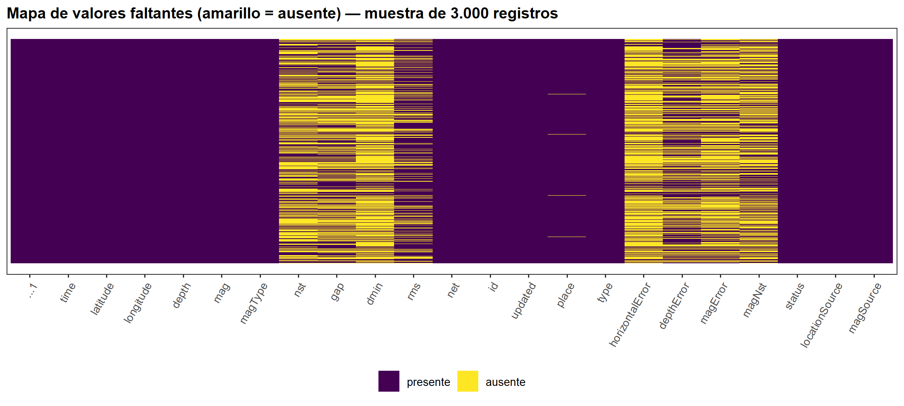

4 4. Descripción del conjunto de datos
4.1 4.1 Fuente y variables
El conjunto de datos es un catálogo sísmico en formato USGS (Significant_Earthquakes) con aproximadamente 115.500 eventos registrados entre 1900 y 2023 y 22 variables por evento:
| Grupo | Variables |
|---|---|
| Tiempo y localización | time, latitude, longitude, depth, place |
| Magnitud | mag, magType, magNst, magError |
| Calidad de la localización | nst, gap, dmin, rms, horizontalError, depthError |
| Identificación y metadatos | id, net, type, status, updated, locationSource, magSource |
time y updated pueden venir en dos formatos según la fuente del CSV: como milisegundos desde el epoch Unix (formato original de la API de USGS) o ya como texto/fecha ISO 8601 (formato común en versiones redistribuidas, p. ej. en Kaggle). El código detecta automáticamente cuál es el caso.
Notas importantes sobre este dataset
- Cobertura global: incluye sismos de todo el mundo desde 1900. Comparar «reciente vs. histórico» sin filtrar por región mezclaría zonas de altísima actividad (Cinturón de Fuego del Pacífico) con zonas de baja actividad (Europa, África), lo cual invalida cualquier comparación. Por eso el análisis se hace por región (malla de 5° × 5°).
- Filtrado por magnitud ≥ 5: el dataset solo reporta sismos de magnitud mayor o igual a 5. Esto implica que el histograma y la densidad de la magnitud están truncados por la izquierda (no es una distribución normal «completa»), y es la razón por la que se incorpora el análisis de la ley de Gutenberg–Richter (b-value), estándar en sismología para caracterizar la distribución de magnitudes.
4.2 4.2 Librerías y configuración del entorno
# install.packages(c("tidyverse","moments","lubridate","scales","zoo","leaflet","htmltools","plotly"))
library(tidyverse) # manejo de datos y ggplot2
library(moments) # skewness, kurtosis
library(lubridate) # manejo de fechas
library(scales) # formato de ejes
library(zoo) # medias móviles
library(leaflet) # mapa interactivo
library(htmltools) # tooltips HTML en el mapa
library(plotly) # gráficos interactivos (histograma, boxplot, densidad, pareto, correlación)
# Se fijan explícitamente las funciones de dplyr que otros paquetes pueden enmascarar
filter <- dplyr::filter
select <- dplyr::select
lag <- dplyr::lag
options(dplyr.summarise.inform = FALSE)
RANDOM_STATE <- 42
ALPHA <- 0.05
set.seed(RANDOM_STATE)
# Paleta de colores (la misma del notebook original)
AZUL <- "#4C72B0"; ROJO <- "#C44E52"; VERDE <- "#55A868"
MORADO <- "#8172B2"; NARANJA <- "#DD8452"; GRIS <- "#BBBBBB"
theme_set(theme_bw(base_size = 11) +
theme(plot.title = element_text(face = "bold", size = 12),
legend.position = "bottom"))
# ---- Funciones auxiliares de formato (los resultados se redactan como texto) ----
fmt <- function(x, d = 2) formatC(x, format = "f", digits = d, big.mark = ",")
fmt0 <- function(x) formatC(x, format = "f", digits = 0, big.mark = ",")
sgn <- function(x, d = 2) sprintf(paste0("%+.", d, "f"), x)
fp <- function(p) formatC(p, format = "e", digits = 2)
pct <- function(x, d = 1) paste0(formatC(x, format = "f", digits = d), " %")
# Traduce un p-valor a una decisión estadística explícita (devuelve texto)
veredicto <- function(p, alpha = ALPHA, h0 = "H0", h1 = "H1") {
if (is.na(p)) return("p-valor no disponible")
if (p < alpha) {
paste0("p = ", fp(p), " < ", alpha, " → se **RECHAZA** ", h0, ". Conclusión: ", h1)
} else {
paste0("p = ", fp(p), " ≥ ", alpha, " → **NO se rechaza** ", h0)
}
}
# Tabla con separador de miles
kab <- function(x, digits = 3, ...) {
knitr::kable(x, digits = digits, format.args = list(big.mark = ","), ...)
}
# Desviación estándar poblacional (equivalente a np.std)
sd0 <- function(x) sqrt(mean((x - mean(x))^2))4.3 4.3 Extracción (carga de datos)
RUTA_DATOS <- "Significant_Earthquakes.csv"
CANDIDATAS <- c(RUTA_DATOS,
Sys.getenv("RUTA_SISMOS", unset = NA),
"data/Significant_Earthquakes.csv",
"../data/Significant_Earthquakes.csv")
ruta <- CANDIDATAS[!is.na(CANDIDATAS) & CANDIDATAS != "" & file.exists(CANDIDATAS)][1]
if (is.na(ruta)) {
stop("No se encontró Significant_Earthquakes.csv. ",
"Asigne la ruta completa a la constante RUTA_DATOS en esta celda.")
}
df_raw <- read_csv(ruta, guess_max = 200000, show_col_types = FALSE)
head(df_raw)## # A tibble: 6 × 23
## ...1 time latitude longitude depth mag magType nst gap dmin rms net id updated place type
## <dbl> <dttm> <dbl> <dbl> <dbl> <dbl> <chr> <dbl> <dbl> <dbl> <dbl> <chr> <chr> <dttm> <chr> <chr>
## 1 0 1900-10-09 12:25:00 57.1 -153. NA 7.86 mw NA NA NA NA ushis ushis391 2022-05-09 14:44:17 16 km SW o… eart…
## 2 1 1901-03-03 07:45:00 36 -120. NA 6.4 ms NA NA NA NA ushis ushis393 2018-06-04 20:43:44 12 km NNW … eart…
## 3 2 1901-07-26 22:20:00 40.8 -116. NA 5 fa NA NA NA NA ushis ushis395 2018-06-04 20:43:44 6 km SE of… eart…
## 4 3 1901-12-30 22:34:00 52 -160 NA 7 ms NA NA NA NA ushis ushis397 2018-06-04 20:43:44 south of A… eart…
## 5 4 1902-01-01 05:20:30 52.4 -167. NA 7 ms NA NA NA NA ushis ushis400 2018-06-04 20:43:44 113 km ESE… eart…
## 6 5 1902-05-19 18:31:00 38.3 -122. NA 5.4 ml NA NA NA NA ushis ushis402 2018-06-04 20:43:44 5 km S of … eart…
## # ℹ 7 more variables: horizontalError <dbl>, depthError <dbl>, magError <dbl>, magNst <dbl>, status <chr>, locationSource <chr>,
## # magSource <chr>Archivo leído: Significant_Earthquakes.csv. Dimensiones del dataset crudo: 115,493 filas × 23 columnas.
4.4 4.4 Auditoría técnica del dataset crudo
auditoria <- tibble(variable = names(df_raw)) %>%
mutate(dtype = map_chr(variable, ~ class(df_raw[[.x]])[1]),
no_nulos = map_int(variable, ~ sum(!is.na(df_raw[[.x]]))),
nulos = map_int(variable, ~ sum(is.na(df_raw[[.x]]))),
pct_nulos = round(nulos / nrow(df_raw) * 100, 2),
unicos = map_int(variable, ~ n_distinct(df_raw[[.x]]))) %>%
arrange(desc(pct_nulos))
kab(auditoria)| variable | dtype | no_nulos | nulos | pct_nulos | unicos |
|---|---|---|---|---|---|
| horizontalError | numeric | 33,808 | 81,685 | 70.73 | 1,526 |
| dmin | numeric | 35,189 | 80,304 | 69.53 | 10,104 |
| nst | numeric | 44,848 | 70,645 | 61.17 | 735 |
| magError | numeric | 48,413 | 67,080 | 58.08 | 343 |
| gap | numeric | 55,133 | 60,360 | 52.26 | 1,858 |
| magNst | numeric | 55,457 | 60,036 | 51.98 | 739 |
| depthError | numeric | 65,778 | 49,715 | 43.05 | 4,816 |
| rms | numeric | 86,746 | 28,747 | 24.89 | 276 |
| place | character | 114,602 | 891 | 0.77 | 64,211 |
| depth | numeric | 115,208 | 285 | 0.25 | 14,339 |
| …1 | numeric | 115,493 | 0 | 0.00 | 115,493 |
| time | POSIXct | 115,493 | 0 | 0.00 | 107,770 |
| latitude | numeric | 115,493 | 0 | 0.00 | 79,249 |
| longitude | numeric | 115,493 | 0 | 0.00 | 86,565 |
| mag | numeric | 115,493 | 0 | 0.00 | 316 |
| magType | character | 115,493 | 0 | 0.00 | 26 |
| net | character | 115,493 | 0 | 0.00 | 21 |
| id | character | 115,493 | 0 | 0.00 | 102,798 |
| updated | POSIXct | 115,493 | 0 | 0.00 | 105,196 |
| type | character | 115,493 | 0 | 0.00 | 7 |
| status | character | 115,493 | 0 | 0.00 | 2 |
| locationSource | character | 115,493 | 0 | 0.00 | 88 |
| magSource | character | 115,493 | 0 | 0.00 | 91 |
n_dup_filas <- sum(duplicated(df_raw))
n_dup_id <- sum(duplicated(df_raw$id))
tb_tipo <- head(sort(table(df_raw$type), decreasing = TRUE), 5)
tipos_txt <- paste0(names(tb_tipo), " = ", fmt0(as.numeric(tb_tipo)), collapse = "; ")
rango_mag <- range(df_raw$mag, na.rm = TRUE)- Filas duplicadas completas: 0
- IDs duplicados: 12,695
- Valores de
type(top 5): earthquake = 115,001; nuclear explosion = 424; volcanic eruption = 54; explosion = 10; landslide = 2 - Rango de magnitud: [5.00 , 9.50]
# Mapa visual de faltantes (muestra de 3.000 registros)
muestra <- df_raw %>% slice_sample(n = min(3000, nrow(df_raw)))
mat_na <- as.data.frame(is.na(muestra))
mat_na$fila <- seq_len(nrow(mat_na))
mat_long <- mat_na %>%
pivot_longer(-fila, names_to = "variable", values_to = "ausente") %>%
mutate(variable = factor(variable, levels = names(df_raw)))
ggplot(mat_long, aes(variable, fila, fill = ausente)) +
geom_tile() +
scale_fill_manual(values = c(`FALSE` = "#440154", `TRUE` = "#FDE725"),
labels = c("presente", "ausente"), name = NULL) +
scale_y_reverse() +
labs(title = "Mapa de valores faltantes (amarillo = ausente) — muestra de 3.000 registros",
x = NULL, y = NULL) +
theme(axis.text.x = element_text(angle = 60, hjust = 1),
axis.text.y = element_blank(), axis.ticks.y = element_blank(),
panel.grid = element_blank())